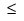

modelflow_v2: Stage 1 Optimization Parameters
Parent topic: modelflow_v2
This section specifies optical model parameters and ranges for optimization by the modelflow_v2 command.
Usage
modelflow_v2
{Input Arguments}
[ Output Arguments ]
[stage1
[ Stage 1 Optimization Run Modes ]
[threshold {auto | optimize | fixed_threshold | optim_set}]
[apodization_loss optim_set]
[asml_quadrant optim_set]
[adjust_bossung [maxRMS [minCDswing [tol]]]
[simulated [inputfc [maxdef [numdef]]]]
[beamfocus optim_set] [beamfocus_ex2 optim_set]
[beamfocus_ex3 optim_set]
[blurenergy optim_set][blurlength optim_set]
[ddmgroupparamM optim_set] (M = 0, …, 4)
[def_start optim_set] [def_start_ex2 optim_set]
[def_start_ex3 optim_set]
[dillumangle optim_set] [dillumangle1 optim_set]
[dillumangle2 optim_set]
[dradius optim_set]
[dsigma_in optim_set] [dsigma_in1 optim_set] [dsigma_in2 optim_set]
[dsigma_out optim_set] [dsigma_out1 optim_set]
[dsigma_out2 optim_set]
[edge_transmission optim_set]
[edge_transmission_exN optim_set] (N=2,3)
[fb_gauss_sigma optim_set] [fb_lorentz_gamma optim_set]
[fb_lorentz_n optim_set] [fb_rectangle_width optim_set]
[filmstackN_thickM optim_set] (N=1,2,3, M=1,…,5)
[filmstackN_thickM_exL optim_set] (N=1,2,3,M=1,…,5, L=2,3)
[flare optim_set]
[illumangle optim_set] [illumangle1 optim_set]
[illumangle2 optim_set]
[imagediffusion optim_set]
[imagediffusion_ex2 optim_set][imagediffusion_ex3 optim_set]
[imagediffusionw1 optim_set imagediffusions1 optim_set
imagediffusions2 optim_set]
[kerneldiffusion optim_set]
[kernel_sigmaN optim_set]
[kernel_scaleN optim_set]
[kernel_rad_inN optim_set] [kernel_rad_outN optim_set]
[kernel_sigmaN_ex2 optim_set]
[kernel_scaleN_ex2 optim_set]
[kernel_rad_inN_ex2 optim_set][kernel_rad_outN_ex2 optim_set]
[kernel_sigmaN_ex3 optim_set]
[kernel_scaleN_ex3 optim_set][kernel_rad_inN_ex3 optim_set]
[kernel_rad_outN_ex3 optim_set]
[transmission_realN_exM optim_set]
[layer_transmission_realN_exM integer]
[linear optim_set] [linear_direction optim_set]
[linearx optim_set][lineary optim_set]
[lossless_pt optim_set]
[lossless_pt_exN optim_set] (N=2,3)
[mask_model_layerM_cc optim_set] (M = 0,…,4)
[mask_model_layerM_cx optim_set][mask_model_layerM_bias optim_set]
[mask_model_layerM_xbias optim_set]
[mask_model_layerM_ybias optim_set]
[mask_model_layerM_cc_exN optim_set] (M = 0,…,4, N = 2, 3)
[mask_model_layerM_cx_exN optim_set]
[mask_model_layerM_bias_exN optim_set]
[mask_model_layerM_xbias_exN optim_set]
[mask_model_layerM_ybias_exN optim_set]
[na optim_set] [na_exN optim_set] (where N= 2, 3)
[num_planes optim_set]
[radius optim_set]
[rotangle optim_set] [rotangle1 optim_set] [rotangle2 optim_set]
[sigma_cntr optim_set]
[sigma_in optim_set] [sigma_in_exN optim_set] (where N=2, 3)
[sigma_in1 optim_set] [sigma_in2 optim_set]
[sigma_out optim_set] [sigma_out_exN optim_set] (where N=2, 3)
[sigma_out1 optim_set] [sigma_out2 optim_set]
[sraf_bot_plane optim_set] [sraf_top_plane optim_set]
[stack_weight_exN optim_set] (N can vary from 1 to 12)
[te optim_set] [tis optim_set] [tm optim_set]
[topo_cterm_N optim_set] (N can vary from 0 to 7)
[topo_csigma optim_set]
[topo_cquadratic_mult optim_set]
[topo_dupsize optim_set]
[topo_fasym optim_set]
[topo_fsigma optim_set]
[topo_fterm_N optim_set] (N can vary from 0 to 7)
[topo_fwasym optim_set]
[topo_fwsigma optim_set]
[topo_fwterm_N optim_set] (N can vary from 0 to 7)
[topo_fwupsize optim_set]
[topo_gterm_N optim_set] (N can vary from 0 to 7)
[topo_gsigma optim_set]
[topo_iterm_N optim_set] (N can vary from 0 to 7)
[topo_isigma optim_set]
[topo_obiasinit optim_set] [topo_obiaswsat optim_set]
[topo_obiasmax optim_set]
[topo_oterm_N optim_set] (N can vary from 0 to 2)
[topo_sterm_N optim_set] (N can vary from 0 to 7)
[topo_squadratic_mult optim_set]
[topo_tterm_N optim_set] (N can vary from 0 to 7)
[topo_vterm_N optim_set]
[topo_vsigma optim_set]
[topo_vsize optim_set]
[topo_so2term_N optim_set] (N can vary from 0 to 7)
[topo_so2sigma optim_set]
[topo_to2term_N optim_set] (N can vary from 0 to 7)
[topo_to2sigma optim_set]
[topo_t2o2term_N optim_set] (N can vary from 0 to 7)
[topo_t2o2sigma optim_set]
[topo_t4o2term_N optim_set] (N can vary from 0 to 7)
[topo_t4o2sigma optim_set]
[topomf string
Topographical Modelform Parameters (topomf)
]
[ka optim_set]
[kf optim_set]
[balance optim_set]
[flare_s1 optim_set]
[flare_s2 optim_set]
[unpolarized optim_set]
[vd_length optim_set] [vd_top_adiabatic optim_set]
[vd_top_c optim_set] [vd_top_shrink_a optim_set]
[vd_top_shrink_l optim_set] [vd_top_surfc_a optim_set]
[vd_top_surfc_l optim_set] [vd_bot_surfc_a optim_set]
[vd_bot_surfc_l optim_set] [vd_top_scale_a optim_set]
[vd_top_scale_l optim_set] [vd_bot_scale_a optim_set]
[vd_bot_scale_l optim_set]
[zn optim_set](n=1,4,5,9,12,16,17,21,25,28,32,36,41,45,49,56,60,64)
]
[ Stage 2 Resist Model Tuning Parameters ]
[ Stage 2 Optimization Parameters ]
[ Stage 3 Etch Model Tuning Options ]
[ Stage 3 Optimization Parameters ]
At least one independent parameter must be specified if stage1 is present.
Arguments
- threshold { auto | optimize | fixed_threshold | optim_set }
Specifies the threshold parameter used when entering a CTR model. Required if stage1 is on. The following options are possible:
threshold auto
Specifies that automatic tuning of this parameter will be performed on the empirical data by averaging over threshold values computed separately for each gauge.
threshold optimize
Specifies that the automatic tuning of the parameter is to be set by minimizing the true objective.
threshold fixed_threshold
Specifies that the specified fixed_threshold value will be used in the CTR model when optimizing optical settings.
threshold optim_set
Specifies that threshold will be varied as an independent, dependent, or constrained parameter.
- apodization_loss optim_set
Specifies the apodization loss as a dimensionless quantity, 0
 apodization_loss
apodization_loss 0.5. (Default = use nominal
model setting or 0 if not specified.)Note:
0.5. (Default = use nominal
model setting or 0 if not specified.)Note:Starting with the 2008.3 release, this parameter cannot be optimized if edge_transmission or lossless_pt are present in the nominal or optimization settings.
- asml_quadrant optim_set
Weight factor for ASML_QUADRANT-type source polarization, a dimensionless quantity between 0 and 1. Only used by Quasar source primitives optimization in COMPOSITE sources. (Default = use nominal model setting.)
Note:A total of no greater than three polarization types can be present in the nominal settings and optimization variables.
- adjust_bossung [maxRMS [minCDswing [tol]]] [simulated [inputfc [maxdef [numdef]]]]
Use this option to adjust the beamfocus after optimization. This option can be used for single exposures, provided that the nominal model involves beamfocus. If adjust_bossung is set:
modelflow_v2 first calibrates any stage1 parameters (including beamfocus) that are present.
It readjusts beamfocus by minimizing the difference between the averaged focus center computed for simulated CD and either the averaged focus center of measured CDs or some specified focus center value if simulated is set.
Optionally, you can specify up to six input values that control the adjustment process. Note that these optional values are numbers (not keywords) and have a specific order, outlined as follows:
maxRMS – This value sets the upper limit for acceptable RMS error of parabolic approximation in nm to be used for filtering out Bossung replica groups whose RMS errors are greater than the specified value. (Default=10.) If present, this value is specified right after adjust_bossung.
minCDswing – This value sets the lower limit for acceptable CD swing (the range, or CD max-CDmin) in nm to be used for filtering out Bossung replica groups whose CD swings are less than the specified value. (Default=1.) If present, this value must be specified second, and requires a value for maxRMS to also be specified first.
tol – This value sets the tolerance in um such that if the difference between simulated and measured focus centers is less than the specified value the minimization will stop. (Default=0.001.) If present, this value is specified third, and requires both maxRMS and minCDswing values to also be specified before it.
simulated – This option tells the tool to adjust beamfocus to a specified focus center value. (Default = adjust beamfocus to the averaged focus center computed for measured CDs.) If present, this keyword should be specified after one (maxRMS), two (maxRMS minCDswing), or three (maxRMS tol minCDswing tol) optional values or right after adjust_bossung if none of the first three optional values is set. This option can only be used if –gf is set or if the input super gauge file (–sgf) involves just one data set for defocus = 0. The simulated option is not compatible with group objectives (input options –objective {fixgroup | floatgroup}).
inputfc – This value specifies the desired input focus center value for the simulated Bossung plots in um (Default=0.) If present, this value is specified first, right after simulated.
maxdef – This value specifies the maximum defocus value used in the computation in um (Default = λ/2/NA2.) If present this value must be specified second, and also requires inputfc to be specified in the first position.
numdef – This value specifies the total number of defocus values (focus conditions) to be used. Positive odd integer greater than 1 and less than or equal to 127 (Default=5.) If present, this value is specified third, and requires inputfc and maxdef to be specified before it.
If no stage1 parameter other than adjust_bossung is specified, the tool adjusts beamfocus using nominal settings. This option cannot be set in the case of multiple exposures, or if contour data arguments (–cli and–clistring) are specified. Also, when set without simulated, adjust_bossung can be used only if the input super gauge data contains at least one Bossung replica group and does not contain duplicated gauges. When simulated is set, duplicated gauges are not allowed.
Note:For definitions of Bossung replica groups, duplicated gauges and averaged Bossung focus center, see the sgd_bossung_select command. For best practices using this option, see the section “Calibration Best Practices for beamfocus and def_start Parameters”.
- beamfocus optim_set
Specifies the beamfocus in microns. (Default = use nominal model setting.)
- beamfocus_ex2 optim_set
Beamfocus of the second optical model in microns. Useful only if a second optical model is also specified. (Default: use nominal model setting.)
- beamfocus_ex3 optim_set
Optional argument used to optimize the beamfocus of the third optical model in microns. (Default = use nominal model setting.)
- blurenergy optim_set
Dimensionless energy parameter of the resistblur kernel, 0 < blurenergy <= 10. (Default = use the nominal model setting.)
For calibration purposes, you should use a maximum value of 2.
- blurlength optim_set
Diffusion length parameter in microns of the resistblur kernel, 0 <= blurlength <= 0.5. (Default = use nominal model setting.)
- ddmgroupparamM optim_set
Optimizes the specified DDM group. This parameter represents the mask stackslope value for a group (M=0 to 4).
When you specify ddmgroupparam, you must also load a model-layer file using -mlfile or -mlstring, and that model-layer file must contain a matching ddm_groupM block. If you specify “auto” for a begin or end range value in optim_set, the range value is determined using the minimum or maximum ddmgroupparam value of the associated ddm_groupM.
You should only optimize for groups that you have; for example, if you only have one type of edge, you only need to optimize for ddmgroupparam0.
- def_start optim_set
Specifies the defocus start in microns. (Default = use nominal model setting.)
TipBest Practice: def_start should always have its search range limited to within
+/- 1/4 λ of the beamfocus parameter.
- def_start_ex2 optim_set
Defocus starting plane of the second optical model in microns. Useful only if a second optical model is also specified. (Default: use nominal model setting.)
- def_start_ex3 optim_set
Optional argument used to optimize the defocus starting plane of the third optical model in microns. (Default = use nominal model setting.)
- dillumangle optim_set
Specifies the transition length of illumangle as a quantity in degrees, 0
 dillumangle,
This parameter is used for describing sources with an ERF profile.
(Default = use nominal model setting.)
dillumangle,
This parameter is used for describing sources with an ERF profile.
(Default = use nominal model setting.)- dillumangle1 optim_set
Transition length of illumangle1, specified in degrees and used for a multiple ASML dipole composite source with an ERF profile. 0 <= dillumangle1.
- dillumangle2 optim_set
Transition length of illumangle2, specified in degrees and used for a multiple ASML dipole composite source with an ERF profile. 0 <= dillumangle2.
- dradius optim_set
Transition length of radius used to describe composite QUAD, DIPOLE, and OFFAXIS sources as a dimensionless quantity. 0 <= dradius. (Default = use nominal model setting.)
- dsigma_in optim_set
Specifies the transition length of sigma_in as a dimensionless quantity, 0dsigma_in, This parameter is used for describing sources with an ERF profile. (Default = use nominal model setting.)
- dsigma_in1 optim_set
Transition length of sigma_in1 as a dimensionless quantity for use in describing sources with an ERF profile for multiple ASML dipole composite sources. 0 <= dsigma_in1.
- dsigma_in2 optim_set
Transition length of sigma_in2 as a dimensionless quantity for use in describing sources with an ERF profile for multiple ASML dipole composite sources. 0 <= dsigma_in2.
- dsigma_out optim_set
Specifies the transition length of sigma_out as a dimensionless quantity, 0
 dsigma_out.
This parameter is used for describing sources with an ERF profile.
(Default = use nominal model setting.)
dsigma_out.
This parameter is used for describing sources with an ERF profile.
(Default = use nominal model setting.)- dsigma_out1 optim_set
Transition length of sigma_out1 as a dimensionless quantity for use in describing sources with an ERF profile for multiple ASML dipole composite sources. 0 <= disigma_out1. (Default = use nominal model setting.)
- dsigma_out2 optim_set
Transition length of sigma_out2 as a dimensionless quantity for use in describing sources with an ERF profile for multiple ASML dipole composite sources. 0 <= disigma_out2. (Default = use nominal model setting.)
- edge_transmission optim_set
Pupil transmission at the maximal NA. 0.8 <= edge_transmission <= 1. This parameter cannot be optimized if apodization_loss is present in the nominal and/or optimization settings. (Default = use nominal model setting.)
- edge_transmission_exN optim_set
Pupil transmission at the maximal NA for the second and third exposures, similar to edge_transmission. N is the exposure number and can be either 2 or 3.
- fb_lorentz_gamma optim_set
The scale parameter of the Lorentzian focus blur that specifies thee width of the modified Lorentz distribution function in microns. 0 <= fb_lorentz_gamma <= 0.5. (Default = use nominal model setting.)
- fb_lorentz_n optim_set
The parameter n of the Lorentzian focus blur that specifies the exponent in the modified Lorentz distribution function. This is a dimensionless quantity. 2.0 <= fb_lorentz_n <= 4.0 (Default = use nominal model setting.)
- fb_gauss_sigma optim_set
The diffusion length of the Gaussian focus blur in microns. 0 <= fb_gauss_sigma <= 0.5. (Default = use nominal model setting.)
- fb_rectangle_width optim_set
The width W of the rectangle function that models focus effects due to tilting the wafer stage during the scan in microns. 0 <= fb_rectangle_width <= 1.0. (Default = use nominal model setting.)
Note:If the input optical model has no focus blur, then all the focus blur parameters (fb_) are set to zero (no blur) except for fb_lorentz_n, which is set to 2.8.
- filmstackN_thickM optim_set
Specifies the thickness in um of film M (=1,…,5) of stack N (=1,2,3) of the optical model associated with exposure 0. Must be a positive number.
Note that multiple films within a given stack are not numbered. They are just assumed to be stacked downwards (in the direction of the propagating light) in the order specified in the optical file. For example, given the following film stack definition:
film 0.72 1.77 -0.01 "720 nm Resist" film 0.003 1.505 -0 "Oxide" film 0.1 1.505 -0 "Oxide Finfet" film2 0.72 1.77 -0.01 "720 nm Resist" film2 0.003 1.505 -0 "Oxide"In this case, to optimize the thickness of “Oxide Finfet” (which is the third film of the first stack) and the thickness of the “Oxide” (which is the second film of the second stack), the associated optimization variables are filmstack1_thick3 and filmstack2_thick2.
- filmstackN_thickM_exL optim_set
Specifies the same as above but for the optical models associated with exposure 1 (L=2) and exposure 2 (L=3).
- flare optim_set
The scale parameter of the flare model. It can be optimized only if a flare model is loaded via the model-layer input file argument (-mlstring). This parameter can be optimized only if stage1 dense and stage2 dense are set explicitly. If stage2 calibration is not required, use stage2 dense try. 0 <= flare <= 2.
- illumangle optim_set
Specifies the illumination angle as a quantity in degrees, 0
 illumangle
illumangle 90. (Default = use nominal model setting.)
90. (Default = use nominal model setting.)- illumangle1 optim_set
Illumination angle for a multiple ASML dipole composite source, specified in degrees. 0 <= illumangle1 <= 90. (Default = use nominal model setting.)
- illumangle2 optim_set
Illumination angle for a multiple ASML dipole composite source, specified in degrees. 0 <= illumangle2 <= 90. (Default = use nominal model setting.)
- imagediffusion optim_set
Gaussian diffusion length in the TCCs as a quantity in microns, 0
 imagediffusion
imagediffusion 0.5. (Default = use nominal
model setting or 0 if not specified.)Tip
0.5. (Default = use nominal
model setting or 0 if not specified.)TipThe tuning of the imagediffusion parameter for CM1 models is generally not recommended. See “Recommendations for CM1 Model Calibration” for more information.
- imagediffusion_ex2 optim_set
Gaussian diffusion length of the second optical model in microns, 0 <= imagediffusion_ex2 <= 0.5. Useful only if a second optical model is also specified. (Default: use nominal model setting.)
- imagediffusion_ex3 optim_set
Optional argument used to optimize the Gaussian diffusion length of the third optical model in microns, 0 <= imagediffusion_ex3 <= 0.5. (Default = use nominal model setting or 0 if not specified.)
- imagediffusionw1 optim_set
Double Gaussian diffusion weight factor as a dimensionless quantity, 0
 imagediffsuionw1
imagediffsuionw1 1. (Default = use nominal model setting.)
1. (Default = use nominal model setting.)- imagediffusions1 optim_set
First double Gaussian diffusion length in the TCCs as a quantity in microns, 0
 imagediffusions1
imagediffusions1 0.5. (Default = use nominal
model setting.)
0.5. (Default = use nominal
model setting.)- imagediffusions2 optim_set
Second double Gaussian diffusion length in the TCCs as a quantity in microns, 0
 imagediffusions2
imagediffusions2 0.5. (Default = use nominal
model setting.)Note:
0.5. (Default = use nominal
model setting.)Note:imagediffusionw1, imagediffusions1, and imagediffusions2 must be optimized simultaneously. None of these parameters can be varied without the two others.
- kerneldiffusion optim_set
Specifies the Gaussian diffusion length in the kernels as a quantity in microns, 0
 kerneldiffusion
kerneldiffusion 0.5.
(Default = use nominal setting or 0 if not specified.)
0.5.
(Default = use nominal setting or 0 if not specified.)- kernel_sigmaN optim_set
Sigma of the Nth Gaussian kernel in nm, N > 0. (Default = use nominal model setting.) N can vary from 1 to 9.
- kernel_scaleN optim_set
Scale of the Nth Gaussian kernel, dimensionless. Can be set only if the appropriate kernel is present in the nominal optical model. N can vary from 1 to 9. (Default = use nominal model setting.)
- kernel_rad_inN optim_set
Inner radius of the Nth tophat kernel in microns, N > 0. Can be set only if the appropriate kernel is present in the nominal optical model. (Default = use nominal model setting.)
- kernel_rad_outN optim_set
Outer radius of the Nth tophat kernel in microns, N > 0. Can be set only if the appropriate kernel is present in the nominal optical model. (Default = use nominal model setting.)
The following options are also available:
kernel_{sigma, scale, rad_in, rad_out}N_ex2
Analogous to the corresponding quantities above, and with all the same limitations, but for the second optical model instead of the first.
kernel_{sigma, scale, rad_in, rad_out}N_ex3
Analogous to the corresponding quantities above, and with all the same limitations, but for the third optical model instead of the first.
- transmission_realN_exM optim_set
Is the real part of the transmission of a layer N for the Mth exposure. Here, N may vary from 1 to 9 and M may vary from 1 to 6.
- layer_transmission_realN_exM integer
Is the layer whose transmission is to be optimized, which must be used in conjunction with the transmission_realN_exM option. Here, N may vary from 1 to 9 and M may vary from 1 to 6.
- linear optim_set
Weight factor for LINEAR-type source polarization, a dimensionless quantity between 0 and 1. Only used by COMPOSITE sources. (Default = use nominal model setting.)
- linear_direction optim_set
Specifies the direction in degrees with respect to the X-axis, a parameter specified for LINEAR-type source polarization. Only used by COMPOSITE sources. (Default = use nominal model setting.)
If LINEAR-type source polarization was not present in the original model, both linear and linear_direction must be optimized simultaneously.
- linearx optim_set
Specifies the weight factor for LINEARX-type source polarization, a dimensionless quantity between 0 and 1. Only used by COMPOSITE sources. (Default = use nominal model setting.)
- lineary optim_set
Specifies the weight factor for LINEARY-type source polarization, a dimensionless quantity between 0 and 1. Only used by COMPOSITE sources. (Default = use nominal model setting.)
- lossless_pt optim_set
Specifies the radius in normalized pupil coordinates (1.0 corresponds to the maximal NA) below which the pupil has no attenuation. 0 <= lossless_pt <= 1.0. (Default = use nominal model setting.)
- lossless_pt_exN optim_set
Specifies the radius in normalized pupil coordinates for the second and third exposures, similar to lossless_pt. N is the exposure number and can be either 2 or 3.
- mask_model_layerM_cc optim_set
mask_model_layerM_cx optim_set
Specifies a concave (_cc) or convex (_cx) corner chopping value in microns of the mask model associated with the first exposure, maskNum = 0.
Corner chopping represents a 2D (X-Y plane) model of the effect of the mask writer on the final mask corners on a real mask. In effect, each convex corner has a isosceles right triangle inscribed in the corner and subtracted, and each concave corner has an isosceles right triangle filled into the corner. The isosceles triangle’s equal length edges have length L equal to the cx or cc value, making the hypotenuse sqrt(2)*L.
Corner chopping is performed on layers mapped to the specified (layerM) definition of the mask model, 0 <= mask_model_layerM_cc <= 0.02, M = 0 … 4. Can be optimized only if a mask model is loaded using a model-layer input file, and stage1 dense and stage2 dense are both specified. (Default = use nominal model setting.)
- mask_model_layerM_bias optim_set
mask_model_layerM_xbias optim_set
mask_model_layerM_ybias optim_set
Specifies a value for the mask bias in microns which is applied to both X and Y directions simultaneously (mask_model_layerM_bias) or in the X or Y directions individually (mask_model_layerM_xbias and mask_model_layerM_ybias, respectively). Biasing is performed on layers mapped to the specified (layerM) definition of the mask model, M = 0 … 4. Can be optimized only if a mask model is loaded using a model-layer input file, and “stage1 dense” and “stage2 dense” are both specified. (Default = use nominal model setting.)
- mask_model_layerM_{cc | cx | bias | xbias | ybias}_exN
Similar to the mask_model_layerM options above, but for the case when second (N= 2 refers to mask_model maskNum = 1) and third (N= 3 refers to mask_model maskNum = 2) exposures are present.
- na optim_set
na_exN optim_set
Specifies the numerical aperture of the exposure system as a dimensionless quantity, where 0 < na < 1. (Default = use nominal model setting.)
Similarly, the na_exN argument (where N=2, 3) applies to the second (N=2) and third (N=3) exposures.
- num_planes optim_set
Specifies the defocus number of planes. This parameter only requires two integers for optim_set, which are the begin and end values of the search interval; num_levels is ignored and set to 1+end-begin. (Default = use nominal model setting.)
- radius optim_set
Radius used to specify the location of the inner pole for composite QUAD, DIPOLE, and OFFAXIS sources as a dimensionless quantity. 0 < radius < 1. (Default = use nominal model setting.)
- rotangle optim_set
Rotation angle in degrees to apply to a ASML_DIPOLE source or ASML_POLE, QUAD, DIPOLE, or OFFAXIS composite sources. (Default = use nominal model setting.)
- rotangle1 optim_set
Rotation angle in degrees used with ASML_DIPOLE sources and ASML_POLE, QUAD, DIPOLE, and OFFAXIS composite sources. (Default = use nominal model setting.)
- rotangle2 optim_set
Rotation angle in degrees used with ASML_DIPOLE sources and ASML_POLE, QUAD, DIPOLE, and OFFAXIS composite sources. (Default = use nominal model setting.)
- sigma_cntr optim_set
Partial coherence factor value of the inner circle as a dimensionless quantity. 0 <= sigma_cntr < 1. (Default = use nominal model setting.)
- sigma_in optim_set
sigma_in_exN optim_set
Specifies the radius of the blocked out illumination cone as a dimensionless quantity, 0
 sigma_in
sigma_in  1. (Default = use nominal model
setting.)Note:
1. (Default = use nominal model
setting.)Note:Values of sigma_in greater than or equal to sigma_out are not allowed, that is, the inequality end_sigma_in <= begin_sigma_out must be satisfied.
Similarly, the sigma_in_exN argument (where N=2, 3) applies to the second (N=2) and third (N=3) exposures.
- sigma_in1 optim_set
Radius of the blocked out illumination cone as a dimensionless quantity, used for multiple ASML dipole composite sources. 0 <= sigma_in1 <= 1 (Default = use nominal model setting.)
- sigma_in2 optim_set
Radius of the blocked out illumination cone as a dimensionless quantity, used for multiple ASML dipole composite sources. 0 <= sigma_in2 <= 1 (Default = use nominal model setting.)
- sigma_out optim_set
sigma_out_exN optim_set
Specifies a partial coherence factor value of the outer circle as a dimensionless quantity, 0 < sigma_out 1. (Default = use nominal model setting.)
Similarly, the sigma_out_exN argument (where N=2, 3) applies to the second (N=2) and third (N=3) exposures.
- sigma_out1 optim_set
Partial coherence factor of the outer circle as a dimensionless quantity for use in multiple ASML dipole composite sources. 0 < sigma_out1 <= 1 (Default = use nominal model setting.)
- sigma_out2 optim_set
Partial coherence factor of the outer circle as a dimensionless quantity for use in multiple ASML dipole composite sources. 0 < sigma_out2 <= 1 (Default = use nominal model setting.)
- sraf_bot_plane optim_set
sraf_top_plane optim_set
Metrology plane for the SRAF gauges near the resist bottom, measured starting from the bottom of the resist (sraf_bot_plane) or top of the resist (sraf_top_plane). Can be set only for Super Gauge Data File Format version 2 files, and only if SRAF gauge sets are present in the file. 0 < sraf_bot_plane < resist height and 0 < sraf_top_plane < resist height. (Default = use nominal model setting.)
- stack_weight_exN
Stack weight of the Nth optical model (N can vary from 1 to 12). Can be set only if the keyword film2 is present in the optical model. The value should be a dimensionless quantity satisfying the constraint stack_weight_exN <= 1.
- te optim_set
Weight factor for TE (or S)-type source polarization, a dimensionless quantity between 0 and 1. Only used by COMPOSITE sources. (Default = use nominal model setting.)
- tis optim_set
Total integer scatter parameter. 0 < = tis <= 1. It can be optimized only if a flare model is loaded using the model-layer input file (-mlstring), and it can only be optimized if the stage1 dense and stage2 dense options are set.
- tm optim_set
Weight factor for TM (or P)-type source polarization, a dimensionless quantity between 0 and 1. Only used by COMPOSITE sources. (Default = use nominal model setting.)
- topo_cterm_N optim_set
Specifies a dimensionless linear coefficient for the Nth topo model corner diffusion term. (N=0, …, 7). -10 <= topo_cterm_N optim_set <= 10.
- topo_csigma optim_set
Specifies the diffusion length of the corner diffraction kernels in P1 units. The default is 1.
- topo_c2term_N optim_set
Specifies a dimensionless linear coefficient for the Nth topo model corner2 diffusion term (for SOI processes). (N=0, …, 7). -10 <= topo_c2term_N optim_set <= 10.
- topo_c2sigma optim_set
Specifies the diffusion length of the corner2 diffraction kernels in P1 units (for SOI processes). The default is 1.
- topo_cquadratic_mult optim_set
Specifies a dimensionless quadratic multiplier for the topo model corner diffusion term.
-10 <= topo_cquadratic_mult optim_set <= 10.
- topo_dupsize optim_set
Calibrates the upsizing of the density layer, usually the Rx layer, measured in P1 units.
- topo_fasym optim_set
Specifies a dimensionless parameter defining the FinFET kernel asymmetry. The maximum range is 0.1 <= topo_fasym <= 10. The default range is 0.5 to 2.0.
- topo_fterm_N optim_set
Specifies the linear coefficients of the Nth FinFET scattering signal (N=0, …, 7).
-10 <= topo_fterm_N <= 10.
- topo_fsigma optim_set
Specifies a dimensionless width applied to all topo model FinFET scattering signal terms. Must be positive.
- topo_fwasym optim_set
Specifies a dimensionless parameter defining the power balance between FinFET sidewall signal sources on open horizontal fin and vertical fin sidewalls. 0.0 <= topo_fwasym <= 1.0.
- topo_fwterm_N optim_set
Specifies linear coefficients of the Nth topo model FinFET sidewall scattering term, where (N=0, …, 7).
-10 <= topo_fwterm_N <= 10.
- topo_fwsigma optim_set
Specifies a dimensionless diffusion length for topo model FinFET sidewall scattering terms. Must be positive. The scale factor is lambda/n, where lamdba is the wavelength in vacuum, and n is the resist refraction coefficient.
- topo_fwupsize optim_set
Specifies a dimensionless offset value applied to the FinFET sidewall signal source. Must be positive. The scale factor is lambda/n, where lamdba is the wavelength in vacuum, and n is the resist refraction coefficient.
- topo_gterm_N optim_set
Linear coefficients of Nth topo model gate scattering term (N = 0, …, 7).
-10 <= topo_gterm_N optim_set <= 10. Can be set only if dense is specified.
- topo_gsigma optim_set
Dimensionless diffusion length applied to all topo model gate scattering terms. Must be positive. Can be set only if dense is specified.
- topo_iterm_N optim_set
Linear coefficients of the Nth topo model poly interconnect scattering term (N = 0, …, 7).
-10 <= topo_iterm_N optim_set <= 10. Can be set only if dense is specified.
- topo_isigma optim_set
Dimensionless diffusion length applied to all topo model poly interconnect scattering terms. Must be positive. Can be set only if dense is specified.
- topo_obiasinit optim_set
Dimensionless upsize value applied to the underlying active layer for the initial oxide trench bias. The maximum range is -10 <= topo_obiasinit <=10. The default range is -0.1 to 0.1. Scale factor is λ/n, where λ is the wavelength in vacuum, and n is the resist refraction coefficient. Can be set only if dense is specified.
- topo_obiaswsat optim_set
Dimensionless trench saturation width for the variable oxide bias. The biases of trenches that are wider than the saturation width are equal to the value specified in the topo model by the topo_obiasmax option. The maximum range is 0 <= topo_obiaswsat <= 10. The default range is 0.5 to 2.5. Scale factor is λ/n, where λ is the wavelength in vacuum, and n is the resist refraction coefficient. Can be set only if dense is specified.
- topo_obiasmax optim_set
Dimensionless maximal value of the oxide trench bias that is applied to trenches that are wider than the saturation width specified in the topo model by the topo_obiaswsat option. The maximum range is -10 <= topo_obiasmax <= 10. The default range is -0.1 to 0.1. Scale factor is λ/n, where λ is the wavelength in vacuum, and n is the resist refraction coefficient. Can be set only if dense is specified.
- topo_oterm_N optim_set
Dimensionless coefficients of the oxide bias polynomial (N = 0, 1, 2).
-10 <= topo_oterm_N <= 10. Can be set only if dense is specified.
- topo_sterm_N optim_set
Linear coefficients of the Nth topo model sidewall reflection term (N = 0, …, 7).
-10 <= topo_sterm_N <= 10. Can be set only if dense is specified.
- topo_ssigma optim_set
Specifies the diffusion length of the sidewall diffraction kernels in P1 units. The default is 1.
- topo_s2term_N optim_set
Specifies a dimensionless linear coefficient for the Nth topo model sidewall2 diffusion term (for SOI processes). (N=0, …, 7). -10 <= topo_s2term_N optim_set <= 10.
- topo_s2sigma optim_set
Specifies the diffusion length of the sidewall2 diffraction kernels in P1 units (for SOI processes). The default is 1.
- topo_squadratic_mult optim_set
Quadratic multiplier of topo model sidewall reflection, -10 <= topo_squadratic_mult <= 10. Can be set only if dense is specified.
- topo_tterm_N optim_set
Linear coefficients of the Nth topo model trench radiation term (N = 0, …, 7).
-10 <= topo_tterm_N optim_set <= 10. Can be set only if dense is specified.
- topo_so2term_N optim_set
Specifies a dimensionless linear coefficient for the Nth topo model sidewallo2 reflection term (for STI processes). (N=0, …, 7). -10 <= topo_so2term_N optim_set <= 10.
- topo_so2sigma optim_set
Specifies the width of the sidewallo2 reflection kernels in P1 units (for STI processes). The default is 1.
- topo_to2term_N optim_set
Specifies a dimensionless linear coefficient for the Nth topo model trencho2 radiation term. (N=0, …, 7). -10 <= topo_s2term_N optim_set <= 10.
- topo_to2sigma optim_set
Specifies the width of the trencho2 radiation kernels in P1 units. The default is 1.
- topo_t2o2term_N optim_set
Specifies a dimensionless linear coefficient for the Nth topo model trench2o2 radiation term. (N=0, …, 7). -10 <= topo_s2term_N optim_set <= 10.
- topo_t2o2sigma optim_set
Specifies the width of the trench2o2 radiation kernels in P1 units. The default is 1.
- topo_t4o2term_N optim_set
Specifies a dimensionless linear coefficient for the Nth topo model trench4o2 radiation term. (N=0, …, 7). -10 <= topo_s2term_N optim_set <= 10.
- topo_t4o2sigma optim_set
Specifies the width of the trench4o2 radiation kernels in P1 units. The default is 1.
- topomf {…}
Specifies an implicit topo modelform. Implicit modelforms automatically set topo model optimization parameters, and are not compatible with the explicit topo_* model parameters above. See the section “Topographical Modelform Parameters (topomf)” for detailed information.
- ka optim_set
Specifies a dimensionless double Gaussian coefficient, 0 <= ka <= 0.2. This parameter requires stage1 dense and stage2 dense to be set, and a flare model must be specified in a model-layer input file. (Default = use nominal model setting)
- kf optim_set
Specifies a dimensionless non-negative flare factor. This parameter requires stage1 dense and stage2 dense to be set, and a flare model must be specified in a model-layer input file. (Default = use nominal model setting)
- balance optim_set
Specifies a dimensionless proportion for the second Gaussian kernel, 0 <= balance <= 0.5. This parameter requires stage1 dense and stage2 dense to be set, and a flare model must be specified in a the model-layer input file. (Default = use nominal model setting)
- flare_s1 optim_set
Specifies a diffusion length of the first Gaussian kernel in nm, 40 <= flare_s2 <= 600. This parameter requires stage1 dense and stage2 dense to be set, and a flare model must be specified in the model-layer input file. (Default = use nominal model setting)
- flare_s2 optim_set
Specifies a diffusion length of the second Gaussian kernel in nm, 40 <= flare_s2 <= 600. This option requires stage1 dense and stage2 dense to be set, and a flare model must be specified in the model-layer input file. (Default = use nominal model setting)
- unpolarized optim_set
Weight factor for UNPOLARIZED-type source polarization, a dimensionless quantity between 0 and 1. Only used by COMPOSITE sources. (Default = use nominal model setting.)
- vd_length optim_set
Vertical diffusion length in microns >=0 (Default = use nominal model setting).
- vd_top_adiabatic optim_set
Vertical diffusion adiabatic parameter for the adiabatic boundary condition at the resist top surface (Default = use nominal model setting).
- vd_top_c optim_set
Vertical diffusion ctop parameter for the sink or adiabatic boundary condition at the resist top surface (Default = use nominal model setting).
- vd_top_shrink_a optim_set
Vertical diffusion shrinkage parameter for the top surface. (Default: use nominal model setting).
- vd_top_shrink_l optim_set
Vertical diffusion length parameter for resist shrinkage at the top. (Default: use nominal model setting).
- vd_top_surfc_a optim_set
Vertical diffusion amplitude parameter for top surface contamination (Default = use nominal model setting).
- vd_top_surfc_l optim_set
Vertical diffusion length parameter for top surface contamination (Default = use nominal model setting).
- vd_bot_surfc_a optim_set
Vertical diffusion amplitude parameter for bottom surface contamination (Default = use nominal model setting).
- vd_bot_surfc_l optim_set
Vertical diffusion length parameter for bottom surface contamination (Default = use nominal model setting).
- vd_top_scale_a optim_set
Vertical diffusion amplitude parameter for top surface dose scaling (Default = use nominal model setting).
- vd_top_scale_l optim_set
Vertical diffusion length parameter for top surface dose scaling (Default = use nominal model setting).
- vd_bot_scale_a optim_set
Vertical diffusion amplitude parameter for bottom surface dose scaling (Default = use nominal model setting).
- vd_bot_scale_l optim_set
Vertical diffusion length parameter for bottom surface dose scaling (Default = use nominal model setting).
- zn optim_set
Coefficient of the nth Zernike polynomial. (Default = use nominal model setting.) Coefficients at spherical aberrations (z1, z4, z9, z16, z25, z36), with n = 49, 64; coefficients at astigmatisms (z5, z12, z21, z32, z45, z60); and quadfoils (z17, z28, z41, z56) are supported as of the 2012.3 release.
Description
Definitions
CTR — Constant Threshold Resist Model of type CM1.
Nominal optical, resist, and etch models are the initial models specified in the setup file.
optim_set — Defined as one of the optimization expressions as described in “Using the Independent, Constrained, and Dependent Optimization Parameters” in the modelflow_v2: Stage 1 Optimization Run Modes.